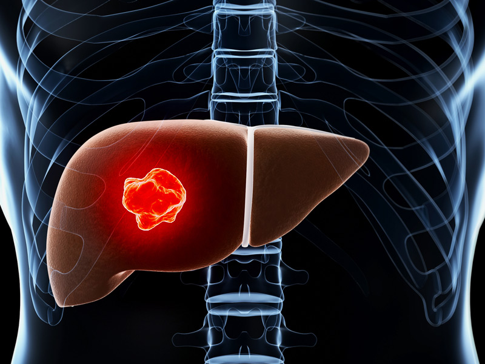

အသည္းကင္ဆာ- Liver Cancer ( Hepatocellular Carcinoma )

အသည္းကင္ဆာဆိုတာ
အသည္းကေန စျဖစ္တဲ့ ကင္ဆာတစ္မ်ိဳးပါ။ တျခားေနရာကေန ျပန္႔ပြားၿပီးမွ ျဖစ္လာတဲ့ ကင္ဆာအမ်ိဳးအစား မဟုတ္ပါဘူး။
အသည္းက ေဘာလံုးတစ္လံုးခန္႔ အရြယ္အစားရွိၿပီး ၀မ္းဗိုက္ရဲ႕ညာဘက္ အေပၚပိုင္းမွာ တည္ရွိပါတယ္။ သူ႔ရဲ႕ေအာက္ဘက္မွာ အစာအိမ္ ရွိပါတယ္။
ဘာေၾကာင့္ ျဖစ္ရတာလဲ
အသည္းကင္ဆာ ဘာေၾကာင့္ ျဖစ္ရသလဲဆိုတာ အတိအက် မသိရေသးပါဘူး။ အသည္းကင္ဆာ စျဖစ္ျဖစ္ခ်င္း အဆင့္မွာလည္း ေရာဂါ လကၡဏာ မျပတာေၾကာင့္ ခ်က္ခ်င္း သတိထားမိဖုိ႔ ခက္ပါတယ္။
ဒါေပမဲ့ ျဖစ္နုိင္ေခ်မ်ားတဲ့ လူေတြကေတာ့
- အသည္းေရာင္ အသား၀ါ ဘီပိုး စီပိုး ကူးစက္ခံရသူ
- အသည္းေျခာက္ေနတဲ့သူ
- အသည္းေရာဂါ ျဖစ္ဖူးတဲ့ မ်ဳိးရိုးရွိတဲ့သူ
- အရက္ လြန္က်ဴးစြာ ေသာက္သံုးတဲ့သူေတြ
- အ၀လြန္တဲ့သူေတြ
- ဆီးခ်ဳိ ေသြးခ်ဳိေရာဂါ ရွိတဲ့သူေတြ
- ခႏၶာကိုယ္တြင္း သံဓါတ္မ်ားေနတဲ့သူ
- ရက္လြန္တဲ့ အစားအစာေတြမွာေတြ႔ရတဲ့ မိႈ (အဆိပ္) စားမိသူေတြမွာ အျဖစ္မ်ားေလ့ ရွိပါတယ္။
အသည္းကင္ဆာ လကၡဏာေတြကေတာ့
- ၀မ္းဗိုက္ ညာဘက္ အေပၚပုိင္း ေအာင့္မယ္၊
- ဗုိက္အေပၚပိုင္းမွာ အလံုး စမ္းမိမယ္၊
- ေရဖ်ဥ္းစြဲမယ္၊ ဗိုက္က တျဖည္းျဖည္း ဆူထြက္လာမယ္၊
- အစားအေသာက္ စားမ၀င္တာ၊ ရင္ျပည့္ၿပီး စားခ်င္ေသာက္ခ်င္စိတ္ မရွိတာ၊
- ကိုယ္အေလးခ်ိန္က်လာတာ၊
- ၾကြက္သားအားနည္း ေမာပန္းလြယ္တာ၊
- မူးေမာ ပ်ဳိ႕အန္တာ
- အသားေတြ ၀ါလာတာ၊
- ဆီး အေရာင္ရင့္လာတာ၊
- ၀မ္းသြားတဲ့အခါ ၀မ္းအေရာင္က အျဖဴ ဒါမွမဟုတ္ ေျမျဖဴအေရာင္လို ျဖစ္လာတာ
- ကိုယ္အပူခ်ိန္တက္ၿပီး ဖ်ားနာတာေတြ ျဖစ္တတ္ပါတယ္။
ေရာဂါ ရွာေဖြတဲ့အခါ
ေရာဂါ ရာဇ၀င္နဲ ့အတူ ကနဦး စမ္းသပ္စစ္ေဆးခ်က္ေတြ ၊ ေသြးစစ္တာ၊ အယ္ထရာေဆာင္း ဓာတ္မွန္၊ သံလိုက္ ဓာတ္မွန္မ်ား ရိုက္တာ ၊ အသားစယူၿပီး စစ္ေဆးတာေတြ ျပဳလုပ္ႏိုင္ပါတယ္။
ကုသမႈ ခံယူမယ္ဆိုရင္
ကုသနည္း အမ်ိဳးမ်ိဳး ရွိတဲ့အနက္ ကၽြမ္းက်င္ ဆရာ၀န္ႀကီးေတြနဲ႔ တိုင္ပင္ၿပီး ေရြးခ်ယ္နုိင္ပါတယ္။
- ဓါတ္ကင္ျခင္း
- ဓါတုေဆးမ်ားျဖင့္ ကုသျခင္း
- ခြဲစိတ္ကုသျခင္း
- အသည္း အစားထိုးျခင္းနည္းေတြကို ေရြးခ်ယ္ကုသနိုင္ပါတယ္။
ႀကိဳတင္ကာကြယ္ဖို႔
- အရက္ အလြန္အကၽြံ ေသာက္သံုးတာမွ ေရွာင္ၾကဥ္ပါ။
- က်န္းမာေရးထိခိုက္ေစတဲ့ အမူအက်င့္ေတြ ေရွာင္ၾကဥ္ပါ။ ဥပမာ- အိပ္ေရး ခဏခဏပ်က္တာ၊ အဆီမ်ား အခ်ဳိမ်ား အငန္မ်ားတဲ့ အစားအစာေတြ အမ်ားႀကီးစားတာ၊ ကိုယ္လက္လႈပ္ရွား ေလ့က်င့္ခန္းေတြ မရွိတာ။
- ပံုမွန္ ကိုယ္အေလးခ်ိန္ ရွိေအာင္ ထိန္းပါ။
- ကာကြယ္ေဆး ႀကိဳတင္ ထိုးထားပါ။ ဥပမာ- အသည္းေရာင္ ဘီပိုး ကာကြယ္ေဆး ထိုးႏွံထားသင့္ပါတယ္။
- တျခားလူတစ္ေယာက္ရဲ႕ ေသြး ၊ တံေတြး၊ ခႏၶာကိုယ္ကေန ထြက္တဲ့ တျခား အရည္ေတြနဲ႔ ထိေတြ႔တာမ်ဳိး ေရွာင္ၾကဥ္ဖို႔ လိုအပ္ပါတယ္။
Source- ေဒါက္တာ ေအာင္ျပည့္ၿဖိဳးဦး